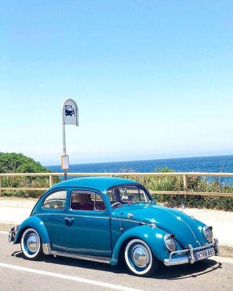
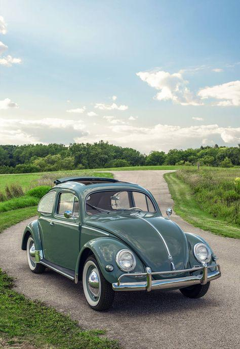

En Volkswagen, creemos que cada viaje es una oportunidad para explorar, disfrutar y conectarse. Desde nuestra fundación en 1937, hemos estado a la vanguardia de la movilidad, combinando diseño alemán de alta calidad con tecnología innovadora y un compromiso inquebrantable con la sostenibilidad. Nuestra gama de vehículos está diseñada para satisfacer las necesidades de todos, desde el icónico Golf hasta nuestros ID eléctricos. que estan revolucionarios.
Con una herencia rica y un enfoque en la excelencia, Volkswagen no solo crea autos, sino experiencias memorables en cada kilómetro. Únete a nosotros en este emocionante viaje hacia un futuro más limpio, eficiente y emocionante.
El Volkswagen Bocho es la representación perfecta de nuestra filosofía de innovación y funcionalidad. Con su diseño moderno y dinámico, el Bocho combina estilo y practicidad, haciéndolo ideal tanto para la ciudad como para escapadas de fin de semana. Su interior espacioso y cómodo ofrece versatilidad, permitiendo adaptarse a tus necesidades.
Equipado con tecnología avanzada y características de seguridad de última generación, el Boco asegura una experiencia de conducción placentera y segura. Además, su eficiente motorización está diseñada para optimizar el consumo de combustible, contribuyendo a un futuro más sostenible.
ABOUT
Somos un equipo de entusiastas dedicados a preservar y compartir la historia y el legado del icónico Volkswagen Escarabajo, conocido cariñosamente como el “bocho.” Nuestra pasión por este automóvil único nos une y nos impulsa a crear una plataforma completa y auténtica para todos aquellos que comparten nuestra admiración por este vehículo.
Nuestra misión es crear un espacio digital que sirva como referencia para todos los amantes del bocho. Queremos preservar su historia, su impacto en la cultura y su evolución a través de los años, proporcionando información detallada, imágenes y recursos útiles que fomenten el aprecio por este clásico.
Nuestra visión es convertirnos en la comunidad en línea más completa y confiable dedicada al Volkswagen Escarabajo, inspirando a nuevas generaciones de aficionados y fortaleciendo la conexión entre los actuales. Soñamos con que esta página sea un punto de encuentro donde se compartan experiencias, conocimientos y el amor por el bocho, asegurando que su legado permanezca vivo y siga recorriendo caminos alrededor del mundo.
Informacion del VW Sedan
Su Historia
El primer automóvil Volkswagen surgió de un concurso para crear el "automóvil del pueblo", con Ferdinand Porsche a cargo del diseño en los años 30. En 1964, Volkswagen de México inició operaciones con la construcción de una planta en Puebla, donde se fabricó el Sedan icónico, conocido como "el auto del pueblo". Esta planta mantuvo la producción del modelo hasta 2003, con un total de 1,691,542 unidades fabricadas, convirtiéndola en la más duradera en su producción
Modelos Clasicos
Algunos modelos de vochos clásicos más deseados por los coleccionistas incluyen:
Bela Barenyi, una estudiante húngara de 18 años, presentó en 1925 un diseño de chasis para un VW, sentando las bases del famoso escarabajo
El Vocho fue inicialmente llamado "el automóvil del pueblo", pero su apodo "Beetle" se popularizó gracias a un artículo del periódico "The New York Times".
La producción del Escarabajo finalizó el 31 de julio de 2003 en Puebla, México. El último Vocho, el número 21529464, fue enviado al Museo del Automóvil de Volkswagen en Wolfsburg, Alemania.
Este es un video realizado por mis companeros relacionado con el bocho mencionando en si algunos datos y curiosidades del mismo y mitico bocho que te aseguro que no te sabias mas de un dato que acabas de ver en el video
Diseño Clásico: Su forma redondeada y compacta es inconfundible y se convirtió en un símbolo de la industria automotriz.
Motor Trasero: El vocho tiene un motor montado en la parte trasera, lo que mejora la tracción en terrenos complicados.

Enfriado por Aire: El motor está enfriado por aire en lugar de agua, lo que simplifica su mantenimiento.
Fiabilidad Mecánica: Es famoso por ser duradero y resistente, con una mecánica sencilla que facilita las reparaciones.
Consumo de Combustible: Económico en cuanto al uso de combustible, una de las razones por las que fue popular por décadas.
Caja de Cambios Manual: La mayoría de los modelos están equipados con una transmisión manual de 4 velocidades.
Suspensión Independiente: Proporciona una conducción suave y cómoda
Interior Sencillo: Tiene un diseño interior básico, sin lujos, pero funcional

Faros Redondos: Sus característicos faros redondos le dan un aspecto amigable.
Capacidad para Pasajeros: Aunque es un auto compacto, puede transportar a 4 o incluso 5 pasajeros en trayectos cortos.
Cajuela Delantera: Debido al motor trasero, la cajuela está situada en la parte delantera del vehículo.
Historia y Cultura: Se asocia con movimientos culturales, desde el “auto del pueblo” en la posguerra hasta su papel en películas y la cultura popular.
MOISES VELAZCO
La página es excelente y me ayudó a conocer más sobre el Vocho. Tiene una interfaz amigable y está bien organizada, lo que facilita la navegación. Es genial ver el trabajo de estudiantes del CBTis 226, ¡definitivamente hicieron un gran trabajo!
PAULINA ACEVES
"Esta página es muy útil y fácil de navegar. La información es clara y está bien organizada, lo que facilita encontrar lo que busco. ¡Definitivamente la recomendaría!"
AGNELO GADIEL
La página es muy buena, me ayudó a conocer más información sobre el vehículo, tiene una buena interfaz y más viniendo de estudiantes del CBTis 226.Genial!!
MAIRIM VALDERRAMA
Opinión: Su diseño es atractivo y claro, lo que permite a los usuarios explorar la historia de este clásico vehículo fácilmente.
GAEL GONZALES
La página web de un bocho celebra su historia y diseño, creando una comunidad para los aficionados. Ofrece información, fotos y foros para compartir consejos y organizar encuentros
YAHIR CHAVEZ
Me encanta esta página de vocho! La cantidad de información y detalles sobre los automóviles clásicos es impresionante.
Bienvenidos al Carrusel
Explora el perfil de cada uno de nuestros integrantes y descubre más sobre ellos.
Porque es un icono cultural de la ingeniería automotriz y crea nostalgia entre personas , ya que pudo haber sido el primer auto de alguien, viajó a varios lados con él u otros momentos agradables que está en la memoria de muchos.
Era adaptable a distintos tipos de terrenos, ya que su motor trasero se enfriaba con aire robusto. También porque tiene un dato curioso; después de la segunda guerra mundial, el bocho fue quien restauró la economia alemana.
Se utilizaba primero que nada para el transporte personal, una de las cosas importantes de un auto es su durabilidad y el bocho es uno de los autos más duraderos. Ideal para cada tipo de suelo o para trabajos como taxi y vehiculo de carga.
El bocho se compone por su carrocería, ya que está diseñado con un espacio aerodinamico que favorece el flujo de aire, reduciendo combustible. También tiene un sistema de frenos de tambor, en las cuatro ruedas, aunque en otros modelos incluyen frenos de disco delantero.
Motor boser de 4 cilindros, este es un motor de combustión en lo que los pistones están dispuestos en pares opuestos, lo que los hace más compactos y con menos vibraciones.